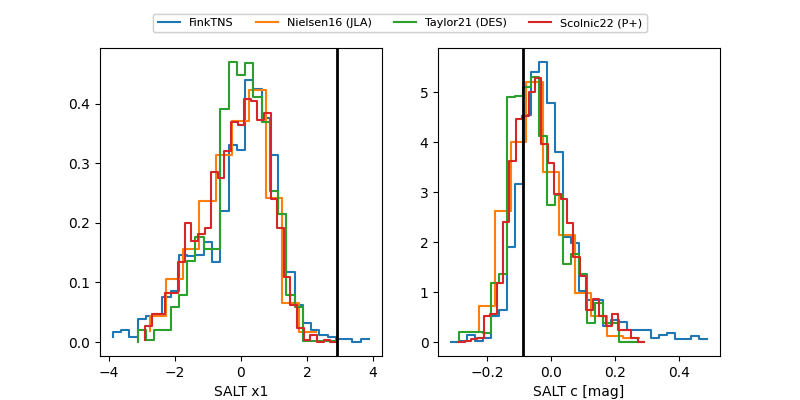

FINK: ZTF25abptwsr
Lasair: ZTF25abptwsr
ALeRCE: ZTF25abptwsr
TNS: 2025xke
YSE: 2025xke
ZTF25abptwsr (ztf,fink)
2025xke (tns,yse)
equatorial (ra, dec) = (298.8199,+49.10868)
galactic (l, b) = (83.1114,+10.63197)

last ztfg=19.85
2 ztfg detections